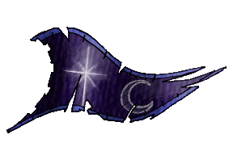
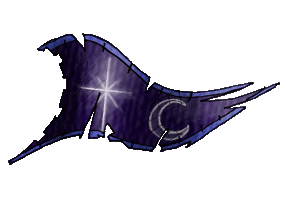

|

|
Das schwarze Brett
|
|
| Übersicht,
Anschläge und Stammtisch (RPG) |
|
Die Jagd ist zu Ende
|
Thor von Asgard
  |
Der CHROME, Crown Hunting Ring Of Mighty Evil, verlässt die Gestade der Scherbenwelten.
Nachdem die letzten der Krieger CHROMEs - Thor von Asgard, Kleister und Cyber genannt Lazasar Dmar -
die Scherbenwelt verlassen hatten und mir, Drago von Erpenstein, die Regelung der Besitzverhältnisse übergeben worden war,
ist nun die Zeit gekommen, da auch der Name CHROME auf Scherben ein Ende finden möge.
In vielen Gesprächen mit den letzten des CHROME und anderen alten Leuten, die die Geschichten über den CHROME zu berichten wussten,
habe ich einiges in erfahrung bringen können.
Einst aus der Welt Garathor, zusammen mit einigen Freunden wie Falster von Distelflamme und Nell aus dem Kronrat, hier in die Scherbenwelt übergesiedelt,
waren sie allesamt Krieger, die auszogen um neue Abenteuer zu erleben und auch hier ein Reich aufzubauen.
Es wurde berichtet von den heldenhaften des CHROME: Boldar Blood, Trashman genannt Elandril, Kleister, Cartman, Cyber, Sarduk, Vänskä Turunen, Darius, Thor von Asgard.
Die meisten fanden zunächst bei den Hämmern der Ehre ein Zuhause, Andere verschlug es zu den Wikingern, Vae Solis oder z.B. Bearpaw.
Und so kam es, dass einige Krieger des CHROME zusammen aber auch teilweise gegeneinander in den Krieg zogen. Zum Beispiel diejenigen auf Holy Island, die gegen die Vae Solis/Roma kämpften.
Aber auch als in der Scherbenwelt neue Gebiete entdeckt wurden, waren sie ganz vorne mit dabei und halfen zum Beispiel Gorgonia von den Monstern zu erobern.
Nach dem Fall der Scherbe und der Befreiung vom Joch der Minotauren fanden sich einige Streiter CHROMEs in dieser neuen Welt wieder und beschlossen, zusammen zu bleiben.
Um nicht wieder an verschiedenen Orten unter verschiedenen Bannern mit oder gegeneinander zu kämpfen, fanden sie sich in der Nation Laoch DOrchadas unter dem Banner Falster von Distelflammes zusammen.
Dennoch bildeten die Krieger des CHROME eine eigene Gemeinschaft innerhalb dieser Nation und man arbeitete bei allem zusammen.
Es wurden Inseln entdeckt, Städte gegründet, und natürlich wurden Kriege geführt.
Der erste Scherbenweite Krieg, welcher auch der erste wirkliche Krieg auf der Scherbe war, zum Beispiel.
Begonnen von den Nationen Wespennest/Nebelwächter von Caligo und der Gruppe des CHROME der Laoch DOrchadas, um die strategisch wichtige Nebelinsel,
weitete sich dieser Krieg bald zu einem Krieg aus, der einen Großteil der Scherbe zum Schlachtfeld machte.
Von den Eisinseln über die Kontinente Loh, Eremiteninsel, Hafeninsel, den kargen Petroleum Inseln über die Sonnensteppe bis zu den Kräuterinseln führten die Kämpfe.
Am Ende des Krieges wurde zwar das eigentliche Ziel nicht erreicht, dennoch konnten einige Gebietsgewinne verzeichnet werden und das feindliche Bündnis zerfiel.
Etwas unzufrieden mit der Friedenspolitik König Falsters beschlossen die Streiter CHROMEs und einige andere der Laoch, den CHROME als Nation zu gründen.
Auch wenn der CHROME nun unabhängig war, waren sie dennoch im Hainbündnis zusammen mit den Laoch, Sd7 und anderen.
Der CHROME wurde auf Grund seiner kämpferischen Mitglieder immer als der militärische Arm des Hainbündnisses angesehen, und so verstanden sich auch die Mitglieder des CHROME.
In jedem Konflikt, in den der Hain verwickelt war kämpften Krieger des CHROME an vorderster Front. Sie waren die Stoßtruppen, welche die Verteidigung des Feindes auslöschen oder zumindest schwächen sollten.
Sie waren die Leute, die inoffiziellen Verbündeten halfen entweder direkt im Kampf, oder durch taktische Unterstützung, oder sei es durch bloße Anwesenheit gewesen.
Ein gutes Beispiel ist hier die Verteidigung der Insel Neshaia Musin, Hauptsiedlungsgebiet der Yakuza unter der Führung des ruhmreichen Tekehiko, die just zu der Zeit,
als die wichtigsten Führungspersönlichkeiten des Hain-Bündnisses auf einem Staatsbankett einem Gelage frönten, durch das Zionbündnis angegriffen wurde.
Die Anfrage auf Unterstützung an den Hain wurde damals an Thor von Asgard und seinen Saufkumpanen Roar Ljökelsoey weitergeleitet. Die Nachricht erhielten sie in mitten einer kleinen Jagdfeier.
Entsprechend war ihr Zustand. Betrunken und kaum fähig zu gehen, wurden beide an Bord von Roars Schiff getragen, wo Roar ans Steuer gelehnt wurde.
Kaum waren sie auf der Insel, kam auch schon der Feind.
Grölend und jolend schwankten die beiden CHROMEr durch die Reihen von Türmen, Armeen und gaben hier einem weiblichen Angreifer einen Klaps auf den Hintern und nahmen dort den Männern die Bierkrüge ab. Und obwohl unfähig vernünftig zu kämpfen hieß es hinterher, die Horden des CHROME hätten den Yakuzas den Hintern gerettet.
Von den heldenhaftigen Verteidigungsaktionen, Ausfällen der Belagerten, und meisterlichen taktischen Leistungen der Verteidiger wurde kein Wort gesagt.
Dies soll nur verdeutlichen, welche Stellung der CHROME sich erarbeitet hatte. Sie wurden geachtet und gefürchtet, von Freund wie Feind, und jeder kannte den CHROME.
Dies waren die Zeiten der Blüte des CHROME. Es wurde geplündert, gemordet, geschändet. Es gab praktisch keinen Konflikt wo der CHROME nicht mitgemischt hat. Und doch, so wurden auch Konflikte verhindert.
Eben durch diesen Ruf der unbarmherzigen Krieger CHROMEs. Der Blutdurst war schon sprichwörtlich.
Doch irgendwann wurden auch diese wilden Krieger bequem und die Mordlust schwand. Wohl auch, weil sie von Falster ziemlich an der kurzen Leine gehalten wurden. Ebenso wurden die alten Krieger langsam des Kämpfens müde
und einer nach dem anderen legte seine Streitaxt oder den 2-Händer beiseite und ging in den Ruhestand. Einige wenige versuchten weiterhin die Nation am laufen zu halten, doch leider gab es keine geeigneten Rekruten und
die alten Hasen wurden immer weniger.
Bis nur noch Kleister und Cyber übrig blieben. Nun sind auch Sie fort und mir obliegt es nun das Kapitel CHROME auf der Scherbenwelt abzuschließen.
In diesem Sinne... Mögen die Krieger des CHROME in Frieden ihren Ruhestand genießen, oder an fernen Gestaden wieder den Blutdurst alter Zeiten finden.
Um es mit den Worten eines berühmten Schriftstellers zu sagen...
Der Mohr hat seine Schuldigkeit getan, der Mohr kann gehen.
Baron Drago von Erpenstein,
Vorsteher von Vega,
Anführer der glorreichen Nation "CHROME"
Zur 17. Stunde am 79.Blumenmond im Jahre 455 |
16.06.13 14:45
 |
|
Icke wieder
  |
Hehehe, da juckt glatt wieder die eine oder andere vergessene Narbe...
Wenngleich nicht alles ganz korrekt,... dennoch unterhaltsam, wie das Leben damals.
Fürst Ottor Waefre,
Vorsteher von Oneiros
Zur 21. Stunde am 80.Blumenmond im Jahre 455 |
16.06.13 21:07
|
|
Almera
 |
Mit CHROME verlässt eine ruhmreiche Nation die Scherbe. Mögen die Taten und der Zusammenhalt jener Gemeinschaft uns Mahnung aber auch Ansporn für die Zukunft sein. Die glorreiche Geschichte des CHROME wird uns stets in bester Erinnerung bleiben.
Pfalzgräfin Almera,
Vorsteherin von Berlinn,
Anführerin der glorreichen Nation "Laoch d´Orchadas"
Zur 15. Stunde am 83.Blumenmond im Jahre 455 |
17.06.13 12:36
|
|
| Loewen von Aldarion (RIP) |
joa, ich weiß aber auch zu berichten, als ruhmreiche krieger gegen die monotauren kämpfrten und von den chromler dabei angegriffen wurden, aber das ist halt vergessen worden von der mordsbande
Freiherr Loewen von Aldarion,
Vorsteher von Taju
Zur 5. Stunde am 84.Blumenmond im Jahre 455 |
17.06.13 15:52
|
|
Beliong Belibril
  |
*kopf kratz*
kleister hatte was drauf, das stimmt.
Baron Beliong Belibril,
Vorsteher von Gondtyl
Zur 22. Stunde am 84.Blumenmond im Jahre 455 |
17.06.13 19:49
|
|
Kittin Silberfang
 |
Thor hatte ne große Klappe und nichts dahinter. Von kleister hat man nie was gehört - dafür hatter was drauf gehabt. Der Rest... Fähnchen im Wind...
Kardinal Kittin Silberfang,
Kardinal im Dienste des einzig wahren Glaubens an Urvan
Zur 5. Stunde am 89.Blumenmond im Jahre 455 |
18.06.13 19:55
|
|
Salkin McMulenberc
   |
Jaja, die Saufgelage und was dabei so Alles zu Bruch ging, war hinlänglich bekannt.
Trotzdem schade, wenn man bald niemanden mehr zum Kappeln findet, und wenn´s manchmal nur die Klappe war.
Hat Spaß gemacht.
Freiherr Salkin McMulenberc,
Vorsteher von Kolchida
Zur 23. Stunde am 3.Erntemond im Jahre 455 |
19.06.13 22:23
|
|
Galaton Dragus
 |
Ich sehe mich respekttechnisch genötigt, ebenfalls einen kleinen Nachruf zu verfassen.
Ein jeder der Chrome kennengelernt hat, weiß schon ganz gut die heldenhaften Taten dieser "Ehrenmänner" einzuordnen. Bei jedem großen Quest war Chrome gewiss an vorderster Front zu finden, nur nicht im Sinne aller restlichen Streiter. Selbst neutrale oder sportliche Wettbewerbe wußten sie mit Wachdiensten und wüsten Beschimpfungen unter der Gürtellinie zu torpedieren.
Niemand wußte es besser, unheimliche Abläufe zu nutzen, um unmögliche Diebstähle innerhalb Bruchteile von Sekunden durchzuführen. Unvergesslich!
Ehrenhafte Duellforderungen wurden in hinterhältige Fallen umgemünzt, Zusagen und Verträge wurde gebrochen wie manch andere ihre Hosen wechseln. Auf Kosten anderer hatte man Spaß, der kleine Mann wurde überrannt. Gefürchtet waren sie, denn jeden geselligen Abend verstanden sie vortrefflich zu verderben.
Von einem Selbsthass geprägte Gossensprache gipfelte meist nur in Fremdenfeindlichkeit und anderen ehrlosen Abartigkeiten, die nicht selten zügig von göttlicher Hand getilgt von allen Brettern dieser Welt ruckzuck wieder verschwanden. In gewohnter Manier und regelmäßigen Abständen kanalisierte sich der linguale Müll bei mir, welches Opfer ich seit jeher auf mich nahm.
Auf der westlichen Sonnensteppe, einem ganzen Kontinent aus Mahagoni-Feldern, mußte Chrome Schutzarmeen auf ihren Feldern aufstellen, weil sie durch Raubbau bei anderen, nicht mal den eigenen Verbündeten trauten, obwohl doch der Zugang aus einem Bollwerk von seelenlosen Türmen seit jeher abgeriegelt ist.
Nesheia Musin...ich war vor Ort, als Takehiko ausradiert wurde. Naja, man könnte auch sagen seine Quittung vom Rest der Scherbe erhalten hat für sein Absiebengefälliges Versteck! Von ruhmreichen Taten der Chrome kann ich leider weniger berichten.
Ihren Ruhestand angetreten sollen sie haben...? Böse Zungen behaupten, einer nach dem anderen wurde still und heimlich vom Sensemann persönlich abgeholt. Nicht mal Münzen für den Fährmann sollen sie am Ende noch gehabt haben, munkelt man.
Ja, so gehen sie zu Ende die Tage eines Levthan, Thor oder kleister - sang und klanglos. Und egal wie man die Medaille dreht und wendet, es wird sich jeder stets seine eigene Seite aussuchen die er gern betrachtet. Rastlose Zeiten stehen ihrer Seelen noch bevor! Ich vermisse die Tage wo mein einstiges Ziel war, ihnen hinterherzujagen und
die Häupter abzuschlagen!
Fahrt zur Hölle - Chrome! Aber sag mir bitte einer wie ich da hinkomme, mit denen bin ich noch nicht fertig!
Graf Galaton Dragus,
Vorsteher von Kristallhafen,
Ehemann der reizenden Tonja Dragus
Zur 5. Stunde am 4.Erntemond im Jahre 455 |
19.06.13 23:50
|
|
Otin ni Shim
  |
Die ach so gepriesene Unabhängigkeit vor ach so tapferen und ruhmreichen Krieger CHROME wage ich stark anzuzweifeln. Meist wirkten sie eher wie ein wütender Baby-Drache, der gefangengenommen und an die Kette gelegt wurde.
Wenn man schon etwas über die Geschichte von CHROME erzählen möchte, dann sollte man auch erwähnen, dass bei jeder Gelegenheit andere Nationen und Herrscher beleidigt und das gemeine Volk drangsaliert wurde. Ließen diese sich das nicht gefallen, so zeigte sich erst recht welch gloreiches Geschöpf die Nation CHROME doch war. Erst wurde provoziert bis man endlich einen neuen Krieg ausgelöst hatte und dann verwandelte sich das ach so mächtige Monster in eine feige Ratte und versteckte sich hinter dem Bündnis seines Herren. Hatte sich der Besitzer bis dato nie für sein bissiges Haustier verantwortlich gefühlt ging dieser dann mit voller Härte gegen jeden vor, der sein armes Tierchen verschreckt hatte.
Der Schaden, den CHROME verursacht hat, wird wahrscheinlich wirklich nur von der von ihnen konsumierten Alkoholmenge übertroffen.
Es mag praktisch sein möglichst viele streitlustige Saufköpfe auf einen Haufen zu haben. Zum einen kann man sie dann besser im Auge behalten, zum anderen schlagen sie sich hoffentlich irgendwann gegenseitig die Köpfe ein. Trotzdem werde ich der Nation CHROME sicherlich keine Träne nachweinen. Die Scherbe ist besser dran ohne sie.
Den Kriegern selber kann man nur eine gute Überfahrt über das Nirgendmeer in ihren „Ruhestand“ wünschen.
Freifrau Otin ni Shim,
Vorsteherin von Osto Alda,
Netre ni î Cirolur
Zur 24. Stunde am 5.Erntemond im Jahre 455 |
20.06.13 9:53
|
|
Übersicht,
Anschläge und Stammtisch (RPG)
|
|
|
|
Dieser Beitrag
verwendet Regelvariante 3
 |
|
|